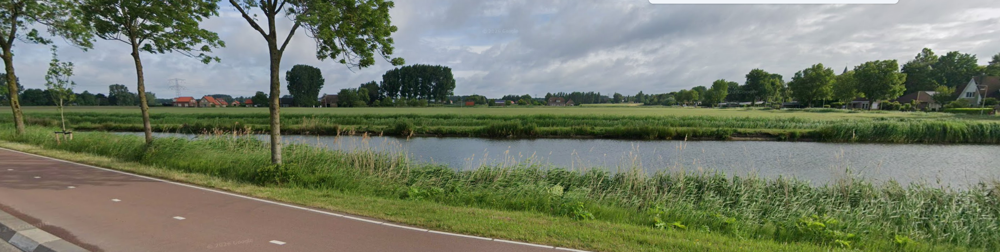

Voorstel voor het oprichten van een gemeentebreed Ondernemersfonds Bergen op Zoom
Het ondernemersfonds is verdeeld over verschillende trekkingsgebieden. Binnen elk gebied bepalen ondernemers en maatschappelijke organisaties zelf hun doelstellingen en de besteding van hun budget. Zo doet het voorstel recht aan de diversiteit van de Bergse economie, zonder het fonds te versnipperen over te veel afzonderlijke potjes.
Voor Bergen op Zoom gaat het om zes werkgebieden: Gemeentebreed, Bedrijventerreinen, Centrum Bergen op Zoom, Stad & Samenleving, Halsteren en Buitengebied (incl. Lepelstraat). Voor de volledige toelichting per gebied en de bijbehorende budgetten kunt u contact opnemen (zie colofon).
Bergen op Zoom kent drie grote bedrijventerreinen: TNP (Theodorushaven-Noordland-De Poort), LMM (Lage Meren-Meilust) en Oude Molen, plus de perifere detailhandelslocaties Geertruidapolder en Wouwseweg. In het voorstel worden deze samengebracht in één trekkingsgebied Bedrijventerreinen, met ruimte voor zowel gezamenlijke als terreinspecifieke agenda's.
Voor de bedrijventerreinen werken we dit uit langs de aanpak van parksamenwerking: de combinatie van parkbeheer (het dagelijks schoon, heel en veilig houden van het terrein) en parkontwikkeling (samenwerken aan strategische opgaven zoals energie, mobiliteit en arbeidsmarkt). Deze twee versterken elkaar: een goede dagelijkse basis maakt het mogelijk om ook de grotere, strategische opgaven gezamenlijk op te pakken.
We houden het hier bewust beknopt: parksamenwerking is één van de bouwstenen naast het centrum en het buitengebied. Een ondernemersfonds maakt parksamenwerking mogelijk door duurzame financiering: een team dat er echt voor gaat, een agenda voor de lange termijn en investeringen die renderen.
De binnenstad is al goed georganiseerd: ondernemersvereniging Sterck voert momenteel de BIZ Binnenstad uit. Het voorstel is dat deze overgaat in het ondernemersfonds, met een groter werkgebied (omdat wordt bijgedragen naar rato van de WOZ-waarde in plaats van een vast bedrag per object). Sterck steunt deze stap, onder de voorwaarde dat het huidige serviceniveau behouden blijft.
Buiten de bedrijventerreinen en het centrum liggen er net zo goed kansen voor samenwerking: in de wijken en wijkwinkelcentra, in Halsteren en in het buitengebied (inclusief Lepelstraat). Ook hier gaat het om het verbinden van bedrijfsleven met onderwijs, zorg, sport en cultuur, en om het versterken van de organisatiegraad waar die nu nog beperkt is. Onderwijsinstelling Curio en ziekenhuis Bravis zijn vanaf een vroeg stadium bij de initiatiefgroep aangesloten.
Trekkingsgebieden geven ieder gebied een eigen budget en eigen zeggenschap. Juist de dwarsverbanden tussen sectoren en gebieden kunnen veel meerwaarde leveren. Dit is precies waarvoor het gemeentebrede aandeel (10% van het fonds) is bedoeld: initiatieven die één gebied overstijgen. Een paar voorbeelden van waar dat toe kan leiden:
Klik op een dwarsverband om uit te klappen:
Schaalvoordeel bij een gezamenlijke veiligheidsaanpak (KVO-trajecten, camerabeveiliging, surveillance) en een gedeelde arbeidsmarktcampagne die zowel winkelpersoneel als technisch personeel voor de bedrijventerreinen aantrekt.
Voorbeeld: Ondernemersfonds Alblasserdam financiert een gemeentebreed netwerk van AED's, precies zo'n voorziening die je niet per gebied apart, maar gebiedsoverstijgend wilt regelen.
Beide hebben te maken met (dreigende) ondermijning en kunnen gezamenlijk optrekken in preventie en meldingsstructuren; ook op energie liggen kansen: bedrijventerreinen als grootverbruikers, het buitengebied als mogelijke locatie voor opwek en opslag.
Voorbeeld: Ondernemersfonds Gemeente Deurne werkt vanuit het buitengebied al aan Project Groen Gas.
Bravis en werkgevers delen een belang bij een gezonde, vitale beroepsbevolking; denk aan gezamenlijke vitaliteitsprogramma's, en aan de zorgsector als partner in arbeidsmarktcampagnes; zorg kampt immers met vergelijkbare personeelskrapte als de bedrijventerreinen.
Voorbeeld: Ondernemersfonds Hardinxveld-Giessendam ondersteunt sport- en muziekactiviteiten voor bewoners van verzorgingshuizen, samen met lokale ondernemers.
Curio kan met stages en leerwerktrajecten net zo goed aansluiten bij een technisch bedrijf op TNP als bij een winkel in de binnenstad; een gemeentebrede aanpak voorkomt dat onderwijs steeds opnieuw losse afspraken per sector moet maken.
Voorbeeld: Ondernemersfonds Alblasserdam financiert een Onderwijsroute; Ondernemersfonds Nieuwkoop een techniek-driedaagse voor leerlingen.
Een gedeelde evenementenkalender kan de binnenstad, de bedrijventerreinen (open dagen) en het buitengebied (streekpromotie, agrotoerisme) met elkaar verbinden, in plaats van dat ieder gebied los zijn eigen promotie organiseert.
Voorbeeld: Ondernemersfonds Utrecht doet dit met 'HKU Exposure', waarbij kunststudenten de hele stad inkleuren.
Dit zijn voorbeelden ter inspiratie, geen vaststaand programma: het fonds is vraaggestuurd, en het zijn de ondernemers en organisaties zelf die bepalen welke gebiedsoverstijgende initiatieven zij oppakken.
Wilt u meer weten over wat het fonds voor uw gebied kan betekenen? Neem contact op.
Contact